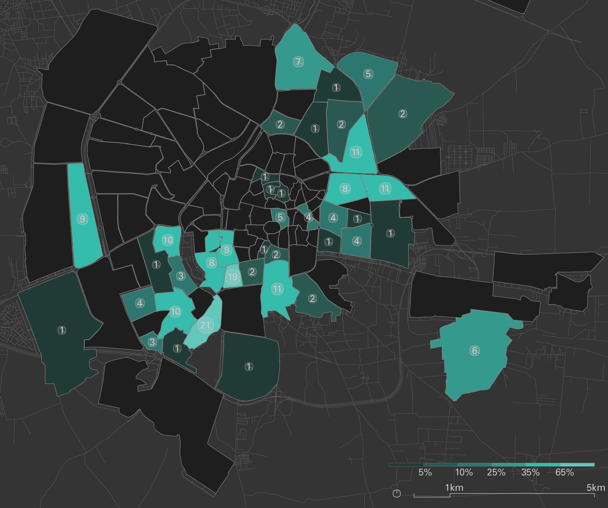

Introduction
IntroductionIntroduction
The civil war in Syria has shown how profoundly the rise of cellphones with video-cameras, as well as online video-hosting and emergent citizen journalism, has changed the landscape of war documentation. YouTube has become one of the largest sources (and archives) of information about events on the ground in Syria: since January 2012 over a million videos of the conflict there have been uploaded, with hundreds of millions of views to date. Major news agencies have come to rely on YouTube as a primary source for their reporting, and human rights organizations often cite videos as part of their advocacy and documentation efforts. This independently reported footage has created a new powerful archive, but opens up crucial questions of credibility, verification, and bias. As with all data, every video comes to us bearing the traces of the situation and intentions that motivated its production. This does not disqualify it – quite to the contrary – but it does demand that we approach everything critically and carefully.We set out to investigate YouTube as archive of the Syrian uprising and to develop a method for organizing that archive spatially. We used the frameworks that we had developed for the Conflict Urbanism Aleppo interactive map, together with a naming convention used by Syrian civic media organizations, in order to sort and geolocate YouTube videos from multiple sources. We then produced a searchable interactive interface for three of the most highly cited YouTube channels, the Halab News Network, the Aleppo Media Center, and the Syrian Civil Defense. We encourage journalists, researchers, and others to use this specifically spatial tool in sorting and searching through the YouTube dataset.
This interactive map shows videos posted on the Halab News Network (HNN) YouTube channel that have been tagged to the neighborhood that is mentioned in each video’s title. The tabs along the top of the window open versions of the same map for the Aleppo Media Center, and the Syrian Civil Defense YouTube channels.
The size of each circle is proportional to the number of videos from the channel selected that mention that neighborhood in their title. The majority of these geolocated videos depict violence in rebel-held territories. We discuss each of these channels in greater detail below.
YouTube as Archive
There have been several other projects that treat YouTube as a valuable archive of the conflict in Syria.Human Rights Watch’s 2013 report, “Death from the Skies: Deliberate and Indiscriminate Air Strikes on Civilians,” supplements on-the-ground interviews with YouTube videos to provide evidence for violations of International Humanitarian Law.
1
HRW has correlated YouTube videos of barrel bomb attacks with satellite images of tangible destruction. The Conflict Resolution Program of the Carter Center, an Atlanta-based NGO, has been analyzing data from multiple social media platforms— including a detailed analysis of YouTube content—as part of their Syria Conflict Mapping Project. The project cross-references information from multiple media sources and has provided a publicly accessible map of conflict events available to the public.
2
The Syrian Archive, a joint initiative of several human rights organizations, has also constructed a database of YouTube videos from the Syrian conflict. Their project focuses on preserving videos and metadata of alleged human rights abuses. The Archive’s website includes a map of manually geo-located videos and available metadata.
3
All of these projects grapple with two core challenges of using YouTube as an archive of the war. First, there is the critical challenge of verifying the accuracy of individual videos: what happened, when, where, and by whom was it recorded? Second, we often lack any auxiliary information, or metadata, for video that is uploaded to social media platforms. YouTube metadata always includes title, description, channel, and date of upload. However, the platform does not require users to enter information about the geographic location of filming or uploading, and there is no automated way of determining the date the footage was captured.
4
The controversy around videos documenting chemical weapon attacks in the Damascus suburb of Ghouta, where users were accused of uploading fabricated videos, is illustrative of the crucial importance of verification. The controversy was highly political: pro-government groups accused anti-government YouTube users of posting videos in an effort to encourage Western governments to intervene in Syria.
5
Rightly, the question of who is posting what videos is relevant to identifying bias that may affect the validity of the claims being made through the images. At the same time, challenges to the accuracy of YouTube footage have served as a weapon for the regime to undermine legitimate documentation efforts by its opponents.Here we have used YouTube to build a spatialized archive of videos of the war in Aleppo. While YouTube metadata does not include a location parameter, a number of established YouTube channels run by grassroots activists and journalists display a kind of “archival consciousness” in that they note the names of neighborhoods, streets, or locations shown in their footage in the titles of videos when they are uploaded. This critical fact has allowed us to develop methods to analyze these video archives spatially and to begin to examine where violence and destruction is occurring. Analyzing patterns in video uploads across time and space opens up the potential to discover how political decisions or material circumstances might have had an effect on what is documented, how events are represented, and conversely what is omitted from the YouTube archive.
Activist Channels
We chose to focus our analysis on a selection of Aleppo-based YouTube channels that have frequently been cited by major English and Arabic language news organizations, such as The New York Times and Al Jazeera, and have been used in reporting by independent NGOs such as Human Rights Watch. We have relied on the expertise of these organizations as an initial measure of the authenticity and trustworthiness of our selected YouTube channels. The three channels we use are: Halab News Network, Aleppo Media Center, Syria Civil Defense.We analyzed the metadata for all of the videos posted on these three channels. We then took this metadata analysis and created interactive maps that spatialize the videos posted. Each channel has specific motivations, and as the maps and graphs below show, the video uploads are often clustered in a specific set of neighborhoods and are uploaded with varying frequency over the duration of the war.
Halab News Network (H.N.N)
Timeline of video uploads by the Halab News Network YouTube channel.
The Halab News Network was founded 2011. The channel’s website cites that it was founded in response to the beginning of the uprisings in Syria. The network has official correspondents which cover the city of Aleppo, including its government-held areas. Our interactive map features videos from the Halab News Network in part because the network has been uploading videos for such a long period and covers a large area of the formerly rebel-held portions of the city.
Videos from the Halab News Network geolocated to the neighborhoods of Aleppo using information contained in each video title.
The Halab News Network shows a wide distribution of videos across the city, including the city center and government-held Western side of the city. The Eastern half of the city -- in particular the Northeastern neighborhoods of ash-Sha’ar (الشعار), Hanano (هنانو), and Ayn at-Tal (عين التينة) – is the best-documented.
Aleppo Media Center
Timeline of video uploads by the Aleppo Media Center YouTube channel.
The Aleppo Media Center (AMC) is a more formal news outlet and predates the conflict in Syria. As such the channel covers a broader range of topics – such as politics and culture – than the other channels which primarily aim at documenting violence in Aleppo.
Videos posted by the Aleppo Media Center geolocated to the neighborhoods of Aleppo using information contained in each video title.
TThe videos published by the Aleppo Media Center roughly follow the formerly rebel-held Eastern side of the city, with a small number of videos from the central and Western areas. The highest number of videos is in the neighborhood of ash-Sha’ar (الشعار). Particular spots include ash-Sha’ar (الشعار), coverage of which is shared with the Syrian Civil Defense. Another notable concentration are two neighborhoods in the Southwest, Bustan al-Qaser (بستان القصر) and al-Fardos (الفردوس).
Syrian Civil Defense
Timeline of video uploads by the Syrian Civil Defense YouTube channel.
The Syrian Civil Defense (SCD) is a volunteer run organization that sends teams to rescue victims of bombings and shelling. They also run a YouTube channel where they post videos documenting their recovery efforts. They have been the subject of a recent Netflix Documentary.
6

Videos posted by the Syrian Civil Defense geolocated to the neighborhoods of Aleppo using information contained in each video title.
The Syrian Civil Defense, also known as the White Helmets, have uploaded videos primarily in the formerly rebel-held Eastern and Southern areas of Aleppo. Only the Western area of ash-Shuhada’ (الشهداء) falls outside of this trend. For both the Syrian Civil Defense and the Halab News Network, ash-Sha’ar (الشعار) is the neighborhood with the most geolocated videos.
Building the Dataset
We have used open source tools to mine, spatialize, and analyze selected YouTube channels. Our method is explained in broad strokes below. The full code for our interactive map is available via GitHubhere.7
The core process for our analysis involved downloading the metadata associated with each video uploaded to our selected YouTube channels, processing that data, and matching the video titles (in Arabic) with a list of neighborhood and major landmark names. We then visualized this information using Grasshopper to produce the static maps and charts, and JavaScript and MapBox to produce the interactive online map.
We used YouTube’s Application Programming Interface (API) to collect the metadata associated with each video on our selected channels. This API is well documented, public, and allowed for a depth of functionality when pulling information from the videos on the selected channels. The API provided for access to videos within a channel as well as metadata associated with videos within a channel. The video metadata appears in the form of a JSON “snippet.”
Taking these JSON elements for each video uploaded by the channels we searched the video titles for matches with the names of Aleppo neighborhoods. For each of these neighborhoods, we searched for the main name, in Arabic, as well as common spelling variations, and the names of prominent landmarks within each geographic area. Our full list of Aleppo’s neighborhoods and the associated search terms is available for downloadhere.
Videos that contained any identical matches to these strings of text were marked by our algorithm as being associated with that neighborhood. This initial list of landmarks and associated spellings was designed in correspondence with the naming conventions of the Halab News Network channel. The channel entries were reviewed individually to identify trends and conventional naming practices in the dataset. Sub-neighborhood names, landmarks, street names, and infrastructure (roundabouts and bridges) were located by looking at more informal sources of geographic information like Wikimapia and at maps produced by local news outlets. The naming conventions of the channel, including sub-neighborhoods and landmarks, were added to the list of possible search terms that was used across all channels.
It was important that the interface not only show quantitative trends in the numbers of videos posted by region, but also the qualitative information from the videos themselves. By displaying videos within each neighborhood chronologically, the footage of the conflict can be read narratively. When a neighborhood marker is clicked, videos from this neighborhood are displayed chronologically so that the videos of this area can be explored in greater depth. Using the stored video snippets, video thumbnails from all videos bound to a specific neighborhood are sorted based on the “published date” (displayed with the most recent at the top) and listed on the right margin of the page. Each video thumbnail is linked to the original video YouTube site to allow for further research.
The HNN channel hosts over 4,000 videos, and new videos continued to be uploaded through the middle of December. It was thus necessary to manage the number of queries to the YouTube API in order to reduce the loading time for multiple video queries and to meet YouTube’s limitations on how many queries can be processed for a single user. In order to manage this information, video snippets from the channel were downloaded and stored on a local server. This allows the majority of videos to be cached locally, while new videos are queried directly from the YouTube API in a manageable quantity.
The map that has resulted from this work is a broad reading of the spatial patterns of YouTube video uploads in Aleppo. But it invites – and indeed demands – further exploration by journalists, students, researchers, and citizens to uncover and retell stories from Aleppo.
Case Study Team:
Nadine Fattaleh, Michael James Storm, Violet Whitney
Return to Case Studies